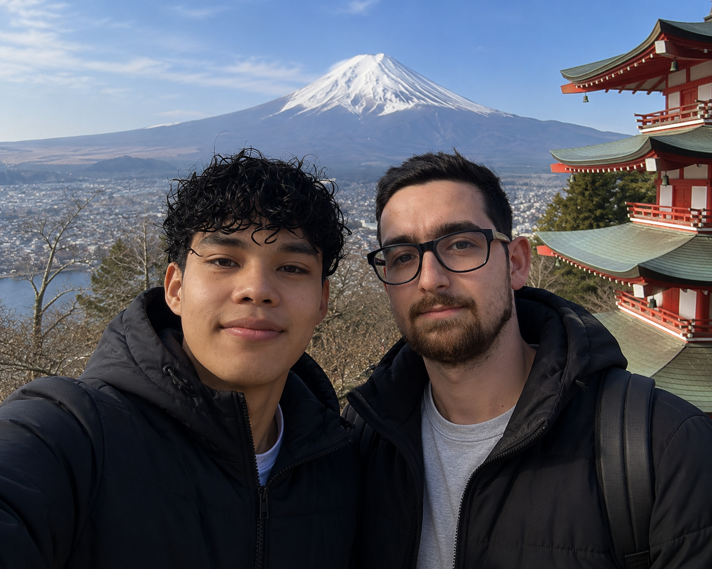
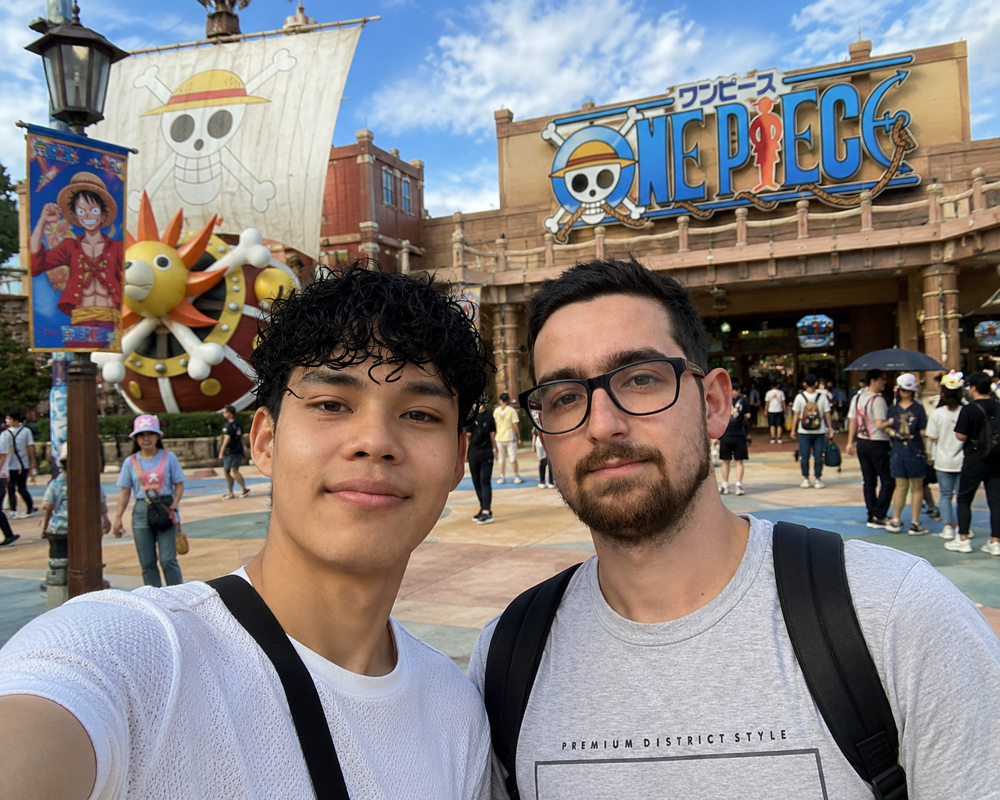

Where?
We went to Japan, an island country in East Asia. It is east of China and Korea, and it is surrounded by the Pacific Ocean.
Japan Spring Journey
We traveled through Tokyo, tasted unforgettable food, admired Mount Fuji, and ended the trip with a fun One Piece adventure.
Trip Snapshot
Bio
We are Brandon and Juan, and we are travel vloggers who explore different places and cultures around the world. On this trip, we traveled across Japan and discovered famous places in Tokyo, traditional food, the beauty of Mount Fuji, and a thrilling One Piece themed adventure.
Our goal was to experience Japan like curious travelers: walking through busy streets, trying local dishes, and enjoying every stop with energy and excitement.
The Logistics
We went to Japan, an island country in East Asia. It is east of China and Korea, and it is surrounded by the Pacific Ocean.
We traveled in spring. The weather was mild, the scenery looked beautiful, and the cherry blossoms made the whole trip feel magical.
We flew from San Jose to Dallas, and then we arrived in Tokyo with American Airlines. The total travel time was around 18 hours.
Tokyo felt modern, colorful, and fast, while Mount Fuji felt calm, fresh, and peaceful. Japan gave us both excitement and tranquility.
The Highlight


On our first day in Japan, we arrived in Tokyo and visited some of the most popular attractions in the city. We visited the Tokyo Tower, the famous Shibuya Crossing, and the beautiful Senso-ji temple.
We also visited famous places for food, like the Tsukiji Outer Market, where we tried ramen and sushi. While we were walking around the city center, we also ate some popular Japanese street food like takoyaki, yakitori, and taiyaki. After that, we returned to our hotel to rest.

On the second day, we left Tokyo early to see Mount Fuji. The drive was smooth, and we got to see some beautiful scenery. When we arrived, the weather was cool, and the view of the mountain was incredible.
We took photos, walked around the area a bit, and enjoyed the natural surroundings. It was a very peaceful and memorable experience.

Afterward, we visited a One Piece-themed park. The park was a lot of fun because we saw decorations, characters, shops, and areas inspired by the anime.
We felt like we were on an adventure with the nakama. We also took photos and bought some souvenirs. It was one of the most exciting activities of the trip.
The Local Experience
One of the best parts of our trip was the food. At Tsukiji Outer Market, we tried fresh sushi, and later we ate ramen in a small restaurant near Shibuya Crossing.
While we were walking around the city, we also tasted takoyaki, yakitori, and taiyaki. The streets were full of lights, people, and food stands, so the atmosphere felt exciting and authentic.
Tap a dish
Selected dish
Sushi is a traditional Japanese dish made with vinegared rice and fresh fish or seafood. It tasted light, fresh, and elegant.


Interactive Route
Tokyo Tower, Shibuya Crossing, Senso-ji Temple, Tsukiji Market
Scenic views, cool weather, photos, and peaceful landscapes
Themed attractions, souvenirs, and a fun anime-inspired experience
Travel Tip
"Wear comfortable clothes and shoes, use public transportation, and book your hotel early."
When visiting Japan, it is important to wear comfortable clothes and shoes because you will walk a lot, especially in places like Tokyo. Public transportation is one of the best ways to travel because the trains and subways are fast, clean, and easy to use. We also recommend booking your hotel early, especially during spring, because many tourists visit Japan during the cherry blossom season.